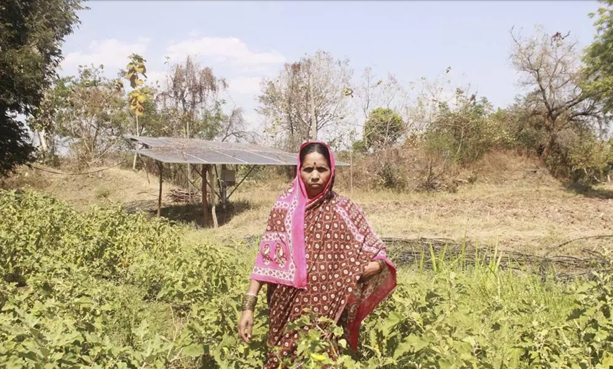

.png)
Hingoli: Ever since Kalavati Savandkar, a widow aged 45, adopted organic farming methods on her three acres of farmland, life has changed for the better. For the first time in many years, she earned a profit from her produce. As a bonus, she says, consuming organically grown food has improved her family’s health, leading to less frequent hospital visits.
Kalavati also found forest produce growing by itself on her farm. She shows off a recent harvest of about three quintals of turmeric that she has put out to dry on her farm in Tembhurni village, of Vasamat block in Hingoli district, 90 km west of Solapur. She is hopeful that the turmeric will fetch Rs 4,000-6,000 per quintal.
Tulasiram, Kalavati’s husband, died by suicide in 2016 as he could not repay a bank loan. He became part of a statistic--Maharashtra registered the highest number of farmer suicides in India in 2019, 2020 and 2021.
Kalavati, along with 182 other female farmers in the area, adopted organic farming in 2020-21, and has been cultivating local varieties of pulses, soybean, cotton and millets, as also vegetables such as spinach, tomato and coriander.
The Mahila Kisan Adhikaar Manch (Makaam) had started this initiative for female farmers, mostly widows of farmers who had died by suicide, sugarcane cutters and marginal farmers from the drought-affected Marathwada and Vidarbha regions of Maharashtra.
“Farmers in both the regions would cultivate cash crops like soybean and cotton,” says Seema Kulkarni, national facilitation team member at Makaam. “Female farmers would not have food to consume at home. The pandemic made women realise this problem, as they had to depend on rations provided by social organisations. Hence, most female farmers agreed to experiment. We did not want them to completely stop cultivating cash crops. They now cultivate 15-25 crops--pulses, millets, vegetables, oilseeds and one main crop (soybean or cotton) for food security.”
Many of the women faced initial resistance from their families when they decided to take up organic farming. To surmount this problem, Makaam asked the women to start experimenting on half an acre.
The organisation trained women in methods of producing manure from farm and animal waste, and vermicompost. They also provided training to produce Dashparni Ark (pesticides made using leaves of various trees, cow urine and cow dung).
Once the half-acre experiment began to show signs of success, several women were able to surmount their family’s initial objections, and go organic on a larger scale.
“To promote organic farming, the Maharashtra government has adopted the Paramparagat Krishi Vikas Yojana (PKKY), a central government-sponsored scheme, in 2016-17,” said Sripad Kulkarni, an official of the Agriculture Department of Maharashtra. “60,985 farmers adopted organic farming on 41,012 hectares of land under the scheme. 1,628 groups of farmers are given Rs 10 lakh per group for three years to facilitate the conversion.”
The state has also implemented the Dr Panjabrao Deshmukh Organic Farming Mission (PDOFM) to promote the practice since 2018 in six suicide-prone districts of Vidarbha. This programme is separate from PKKY. About 8,337 beneficiaries, under the PDOFM practice organic farming on 13,548 hectares of land across six districts--Akola, Washim, Amravati, Buldhana, Yavatmal and Wardha, said Kulkarni, the agriculture department official.
While the state has started the process of switching to natural farming, Makaam is in early-stage collaborations with agricultural universities to get scientific information about organic farming, research on organic farming and access to seeds, though this is not part of the state scheme as of now.
